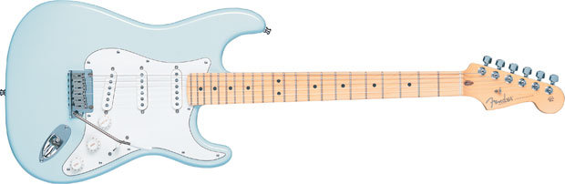
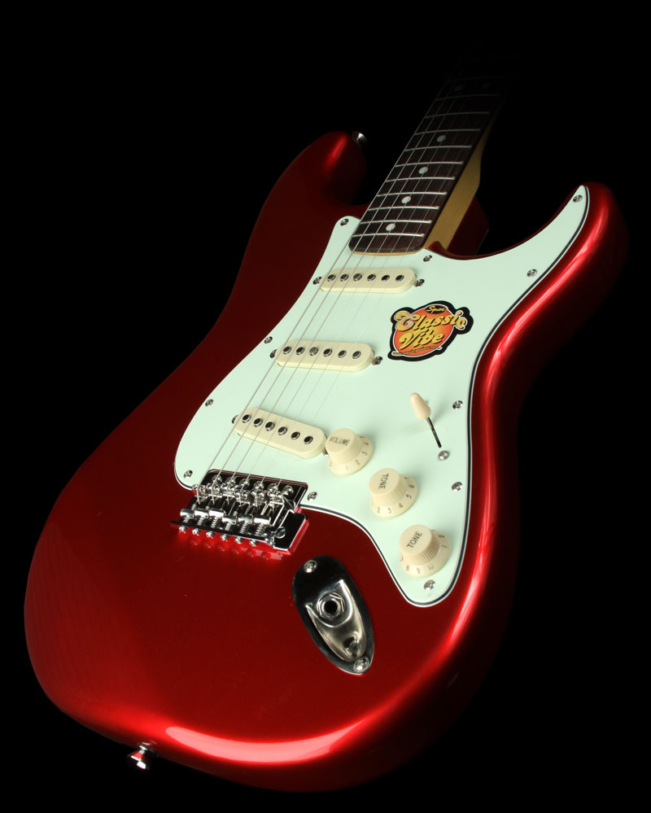
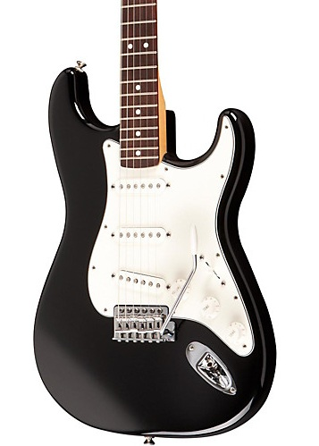

Fender Stratocaster

About Strat
When many people think of an electric guitar, this is the one that leaps to mind. The Stratocaster is an archetypal instrument among the world's most popular guitars and an elegantly versatile creation that is both a musical and cultural touchstone. At its heart, though, the Stratocaster remains a fantastic tool with unmistakable sound and timeless design that have made it the first choice among players worldwide, many of whom have used it to create much of the most important music of our time.
No sooner had Fender revolutionized music with the Telecaster and Precision Bass than it introduced in 1954 what is nearly universally regarded as the archetypal electric guitar, the Stratocaster. Perennially sleek, stylish, smooth playing and tonally versatile, it has transcended its role as musical tool to become nothing short of a cultural icon. There is simply nothing that sings, screams, whispers, moans, roars, rocks and rolls like a Stratocaster.
 Stratocaster guitars have a sleek and balanced two-horn design, with well-placed forearm and body contours that make for a comfortable playing experience.
Three expressive single-coil pickups often modified with various combinations of humbucking pickups and switching configurations. From sparkling to soaring to screaming and beyond, the versatile voice of the Stratocaster remains unequaled.
Now as always, Stratocaster guitars are revered for the innovative design, tonal stability and solid reliability of their tremolo bridges.
Stratocaster guitars are known for comfortable and easily adjusted necks with a variety of profiles, eminently playable fingerboards and an unmistakable headstock.